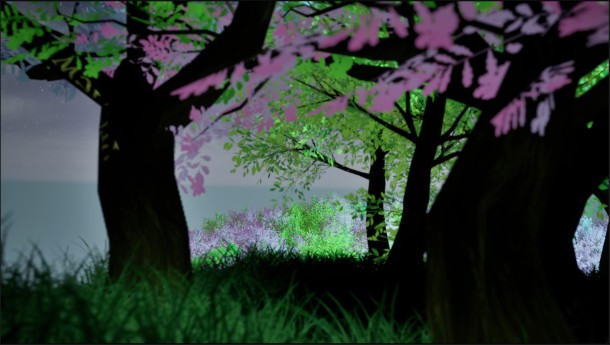
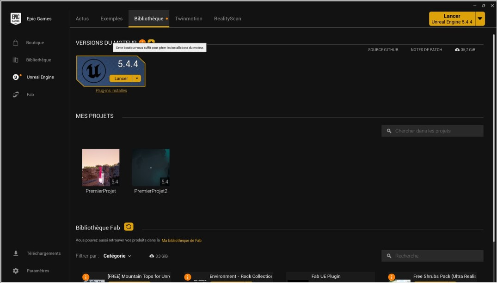
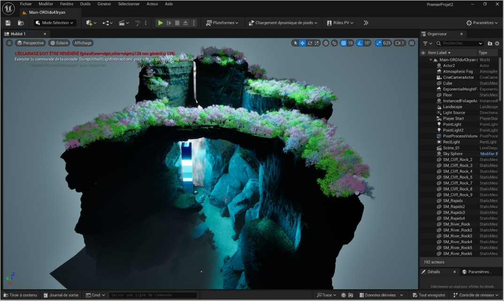
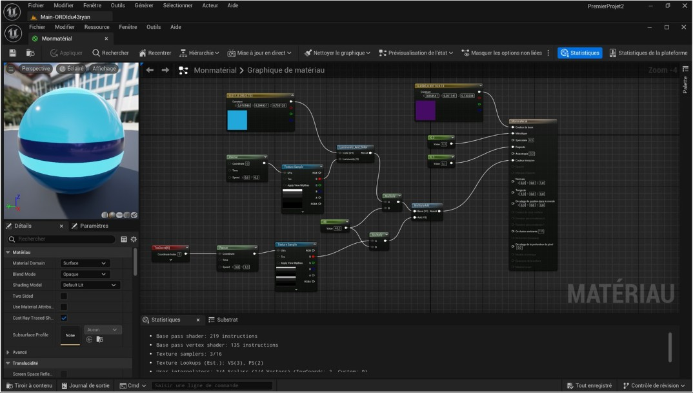
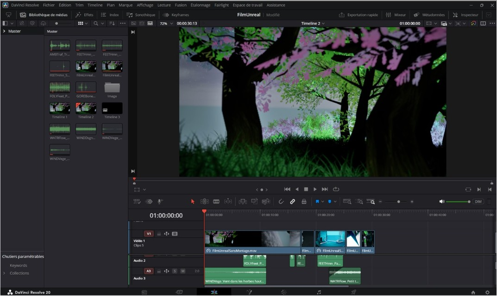

← Retour aux projets
Court métrage UE5
Création d'une scène cinématographique immersive — Unreal Engine 5
Unreal Engine 5
DaVinci Resolve
Bibliothèque Fab

Rendu principal — Court métrage UE5Contexte & sujet
Dans le cadre d'un cours de modélisation 3D, j'ai réalisé mon premier court métrage avec Unreal Engine 5. L'objectif était de créer une scène immersive avec environnement 3D, mise en scène et éclairage dynamique afin de produire un rendu proche des productions professionnelles.
Projet individuel réalisé en BUT Informatique Graphique — 1ère année.
Objectifs visés
- Découvrir la création cinématographique sous UE5
- Réaliser un environnement 3D crédible et immersif
- Maîtriser les outils caméra et séquençage
- Créer une ambiance via lighting et post-process
- Développer la narration visuelle
Mes missions
- Mise en place de la scène 3D principale
- Placement et animation des caméras
- Éclairage et réglage des ombres
- Création des matériaux (Material Graph)
- Post-production sous DaVinci Resolve
Étapes du projet
- Création scène Import assets, décors, proportions
- Mise en scène Caméras, mouvements, transitions
- Éclairage Sources lumineuses, ombres, post-process
- Matériaux Material Graph, textures, shaders
- Rendu final Export vidéo, montage DaVinci
Illustrations

Interface UE5
Scène 3D en cours
Material Graph
DaVinci ResolveCompétences techniques
Transversales
Outils utilisés
Compétences académiques validées
Modélisation 3D et environnements virtuels · Production audiovisuelle · Gestion des pipelines de rendu · Composition visuelle · Narration par l'image